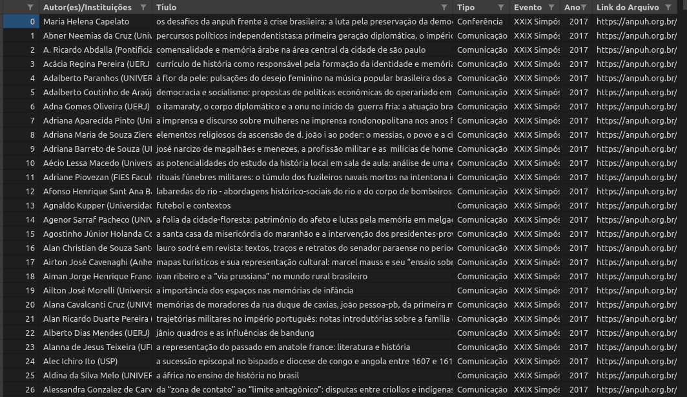

4 ANPUH
4.1 O que é ANPUH?
A Associação Nacional de História, Anpuh, fundada em 1961, inicialmente destinada aos docentes de cursos de graduação e pós-graduação. Em 1993, a ANPUH ampliou sua base para todoa os profissionais de história.
A cada dois anos, a ANPUH realiza o Simpósio Nacional de História, o maior e mais importante evento da área de história no país e na América Latina7.
Desenvolvemos scripts diferentes para dois tipos de conjuntos de dados relacionados à Associação Nacional de História.
Anais-Anpuh: script para raspagem de todos os trabalhos publicados nos Anais dos Simpósio Nacionais de História entre 1963 e 2017, disponíveis no site da Anpuh.
anpuh-scraper: script para raspagem dos resumos (e demais informações) de todos os trabalhos aprovados para todos os simpósios temáticos dos SNH nos aos de 2013, 2015, 2017 e 2019.
4.2 Anais-Anpuh
Clique aqui para acessar o repositório no Github.
4.2.1 Scripts de raspagem
Esse script realiza a raspagem dos trabalhos em PDF de todos os Simpósios Nacionais da Anpuh entre 1963 até 2017, disponíveis atualmente na site da associação, que podem ser acessados aqui.
Escrito em Python 3.8, o script utiliza as seguintes bibliotecas e módulos
- urllib.requests: módulo do Python para acessar urls. Saiba mais.
- os: módulo do Python que permite manipular funções do sistema operacional. Saiba mais.
- bs4: Beautiful Soup é uma biblioteca Python para extrair dados de arquivos HTML e XML.
- re: Regular Expressions é um módulo do Python para operar com expressões regulares.
- pandas: Pandas é uma biblioteca escrita em Python para manipulação e análise de dados.
- wget: Wget é uma biblioteca escrita em Python para realizar downloads.
O script tem o seguinte funcionamento quando executado:
- Cria pasta para salvar os PDFs, após verificar se a mesma não existe no local:
Anais Anpuh> pdfutilizando móduloos. - Acessa a URL dos Anais com a biblioteca
urllibe realiza a análise do HTML da mesma com a bibliotecaBeautifulSoup; - Cria uma lista de eventos a partir da página principal;
- Acessa as páginas de cada evento contidas na lista criada anteriormente através de uma iteração;
- Em cada item da lista de eventos, o script busca todos os papers da primeira página e cria uma nova lista. Nessa lista de papers de uma dada página o script realizará as seguintes ações:
- encontrar as informações de cada paper;
- inclui essas informações em uma lista (que depois gerará um CSV com os dados);
- busca se há pdf disponível e se ele não é repetido faz download do PDF
- Após realizar essas ações para todos os itens de uma página, busca a próxima página de papers do evento, se não houver, passa para o próximo evento e repete as ações em um loop até o último evento disponível.
4.2.2 Dados
O script retorna para o usuário todos os pdfs disponíveis em todas as páginas de todos os Simpósios Nacionais da Anpuh desde 1963 até 2017. São criadas pastas com o número de cada evento para o armazenamento dos arquivos em PDF.

É importante notar que muitos papers não estão com pdf disponível no site, assim como nas edições mais antigas encontramos arquivos que contém vários papers num único PDF.
O script também gera um arquivo CSV (comma-separated values) contendo os seguintes valores para cada paper: Autor(es)/Instituições,Título, Tipo, Evento, Ano, Link do Arquivo. Esse arquivo pode ser aberto como uma planilha e trabalhado em banco de dados.

4.3 anpuh-scraper
Clique aqui para acessar o repositório no Github.
4.3.1 Scripts de raspagem
Raspador dos resumos dos Simpósios Nacionais de História da Associação Nacional de História - Anpuh. O programa raspa todos os resumos dos SNH 27, 28, 29 e 30, respectivamente dos anos de 2013, 2015, 2017 e 2019 Escrito em Python 3.8, o script utiliza as seguintes bibliotecas e módulos
- urllib.requests: módulo do Python que ajuda a acessar urls. Saiba mais.
- bs4: Beautiful Soup é uma biblioteca Python para extrair dados de arquivos HTML e XML.
- pandas: Pandas é uma biblioteca escrita em Python para manipulação e análise de dados.
O script tem o seguinte funcionamento quando executado:
Pergunta ao usuário que ano pretende raspar e se deseja incluir um novo ano à lista. Após a criação da lista com os anos escolhidos pelo usuário, o script acessa cada uma das páginas com as listas dos STs nos sites de cada evento; Acessa cada ST, encontra os dados de todos os resumos e passa para o ST seguinte; Após terminar um ST, passa para o próximo evento e executa as mesmas função; Todos os dados são inseridos em um DataFrame em Pandas e ao final são salvos no formato CSV.
4.3.2 Dados
O script retorna para o usuário um CSV (comma-separated values) com os dados de todos os trabalhos aceitos nos Simpósio Temáticos dos SNH 27, 28, 29 e 30.
O CSV contém as seguintes variáveis para cada resumo:
Ano, Evento, Cidade, ST, Coordenadores, Autor(es)/Instituições, Título, Resumo
Esse arquivo pode ser aberto como uma planilha e trabalhado em banco de dados.